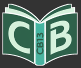
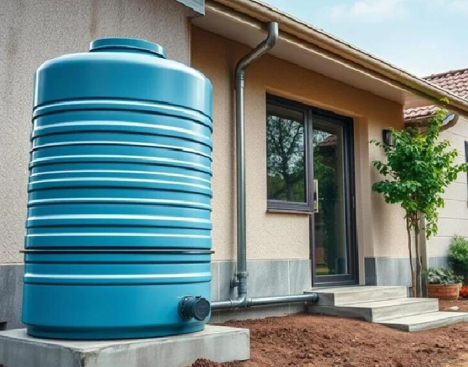

La captación de agua de lluvia es una estrategia para recolectar, almacenar y aprovechar el agua proveniente de las precipitaciones.
Busca reducir el consumo de agua potable y fomentar el uso responsable de los recursos hídricos.

Introducción a la captación del agua de lluvia
El ciclo del agua es el proceso natural mediante el cual el agua circula en la Tierra a través de evaporación, condensación, precipitación e infiltración.
Consiste en aprovechar una parte del ciclo natural para recolectar agua desde techos, patios o superficies.
Un Sistema de Captación de Agua de Lluvia recolecta, conduce, filtra y almacena agua para diversos usos.
Reduce la sobreexplotación de ríos y acuíferos, disminuyendo el desperdicio de agua.
Disminuye el gasto de agua potable y representa ahorro a largo plazo.
Limpiar techos, canaletas y filtros periódicamente.
Emplear el agua captada para limpieza, riego y servicios sanitarios.
Gracias a CB13 PAEC pude actualizar mis conocimientos.
Ana G.Una experiencia académica muy valiosa.
Carlos R.Aprendí nuevas metodologías para mi trabajo.
Sofía M.Xalapa, Veracruz, México
Lunes a viernes: 9:00 AM - 6:00 PM
26637293299